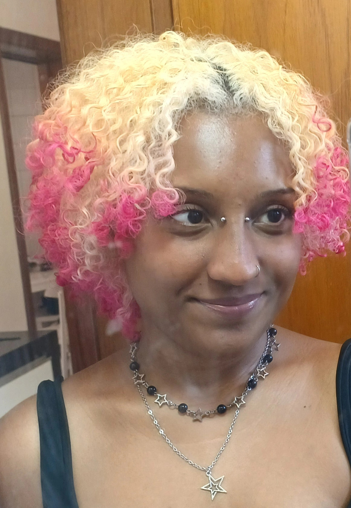

Systems Development Technician, graduated from the Federal Institute of Education, Science and Technology of Rio Grande do Sul - Canoas Campus. I have knowledge in different areas of Technology, with emphasis on Web Development and Database. Skill and experience in planning, managing and developing long and complex projects. Learning and ability to adapt quickly to new challenges and independence in project management.
Hi, I'm Mirian
Hi, there! My name is Mirian Moreira and I’m a Full Stack Developer based in Latin America. I’m very passionate in Front-end Development and I love creating sophisticated and efficient Web Designs.


─•°.-ˏˋ✧ˊˎ-.°•─
✩｡*•. About Me .•*｡✩
Skills Set
- HTML/CSS
- PHP
- SQL
- JavaScript
- C
- API Rest
- Relational Database
- Canva
- Git
- Communication and Decision Making
- Project Leadership and Management